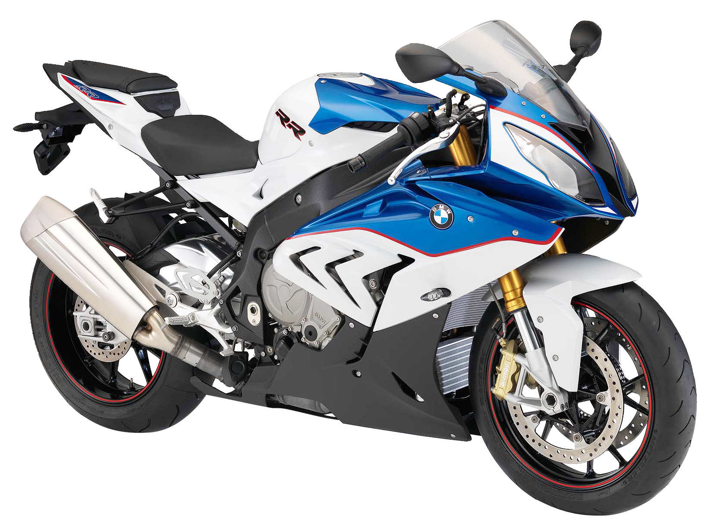

BMW S1000RR

Általános adatok:
- Évjárat: 2022/23
- Kivitel: Gyorsasági/sport
Jármű adatok:
- Szállítható személyek: 2 fő
- Saját tömeg: 197 kg
- Teljes tömeg: 407 kg
Motor adatok:
- Üzemanyag: Benzin
- Hengerűrtartalom: 999 ccm
- Teljesítmény: 152 kW, 207 LE
- Munkaütem: 4
- Hengerek száma: 4
- Henger-elrendezés: Soros
- Hűtés: Víz
- Hajtás: Lánc
- Sebességváltó: Szekvenciális (6 fokozatú)
Műszaki:
- 12 V rendszer
- ABS (blokkolásgátló)
- DTC
- Fém fékcső
- Fordulatszámmérő
- Sport kipufogó
- Dupla tárcsafék elöl
- Tárcsafék hátul
- Önindító
- Fedélzeti computer